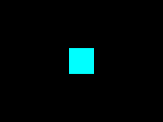
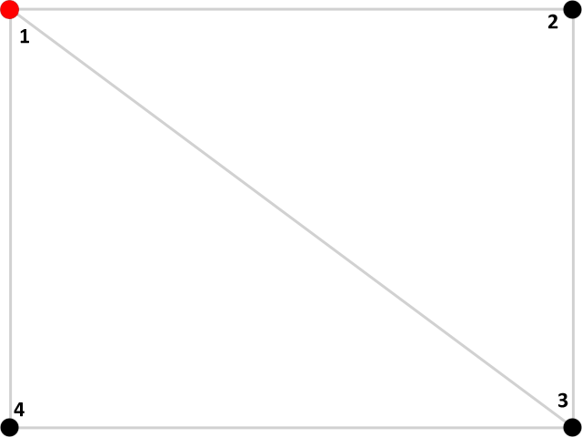

GLM Matrices

Last Updated 10/19/14
In OpenGL 3.0+, the built in OpenGL matrix functions from OpenGL 2.1 are deprecated. Since modern OpenGL implementations want you to roll your own matrix functionality, we'll be using the GL math library to use our own custom matrix operations for our GLSL shader.Setting up GLM
If you know linear algebra (and you should if you're reading this tutorial), you could create your own matrix classes in an afternoon. Since we're strapped for time and we don't want to spend effort on reinventing the wheel, we'll be using the tried and tested open source library GL Math. You can download the library here.
Unlike freeGLUT or even freetype, GLM is a header only library. To set it up, just extract the archive and make sure your compiler/IDE is looking at the directory from the archive.
From LPlainPolygonProgram2D.glvs
//Transformation Matrices
uniform mat4 LProjectionMatrix;
uniform mat4 LModelViewMatrix;
void main()
{
//Process vertex
gl_Position = LProjectionMatrix * LModelViewMatrix * gl_Vertex;
}
As you can see in our updated vertex shader, we have our own custom 4x4 matrices replacing the old built in ones. Glancing at the main function, you'll see they function the same
as the old ones did.
From LPlainPolygonProgram2D.h
#include "LShaderProgram.h"
#include <glm/glm.hpp>
class LPlainPolygonProgram2D : public LShaderProgram
{
public:
LPlainPolygonProgram2D();
/*
Pre Condition:
-None
Post Condition:
-Initializes variables
Side Effects:
-None
*/
bool loadProgram();
/*
Pre Condition:
-A valid OpenGL context
Post Condition:
-Loads plain polygon program
Side Effects:
-None
*/
void setColor( GLfloat r, GLfloat g, GLfloat b, GLfloat a = 1.f );
/*
Pre Condition:
-Bound LPlainPolygonProgram2D
Post Condition:
-Updates uniform color used for rendering
Side Effects:
-None
*/
void setProjection( glm::mat4 matrix );
/*
Pre Condition:
-None
Post Condition:
-Sets member projection matrix
Side Effects:
-None
*/
void setModelView( glm::mat4 matrix );
/*
Pre Condition:
-None
Post Condition:
-Sets member modelview matrix
Side Effects:
-None
*/
void leftMultProjection( glm::mat4 matrix );
/*
Pre Condition:
-None
Post Condition:
-Left multiplies member projection matrix
Side Effects:
-None
*/
void leftMultModelView( glm::mat4 matrix );
/*
Pre Condition:
-None
Post Condition:
-Left multiplies member modelview matrix
Side Effects:
-None
*/
void updateProjection();
/*
Pre Condition:
-Bound LPlainPolygonProgram2D
Post Condition:
-Updates shader program projection matrix with member projection matrix
Side Effects:
-None
*/
void updateModelView();
/*
Pre Condition:
-Bound LPlainPolygonProgram2D
Post Condition:
-Updates shader program modelview matrix with member modelview matrix
Side Effects:
-None
*/
At the top of the LPlainPolygonProgram2D class header we include the glm library header. We also have a bunch of new functions for the new matrices we added to the shader program.
We'll go over those in the cpp file.
From LPlainPolygonProgram2D.h
private:
//Color uniform location
GLint mPolygonColorLocation;
//Projection matrix
glm::mat4 mProjectionMatrix;
GLint mProjectionMatrixLocation;
//Modelview matrix
glm::mat4 mModelViewMatrix;
GLint mModelViewMatrixLocation;
};
Here's the new variables added for the new matrix functionality. The mat4 data type from the glm library is the 4x4 matrix we'll be using the replace the old fixed function
matrices. We have one for the projection and modelview matrix. We also have location variables for each of the matrices so we can update them in the GLSL shader program.
From LPlainPolygonProgram2D.cpp
#include "LPlainPolygonProgram2D.h"
#include <glm/gtc/type_ptr.hpp>
LPlainPolygonProgram2D::LPlainPolygonProgram2D()
{
mPolygonColorLocation = 0;
mProjectionMatrixLocation = 0;
mModelViewMatrixLocation = 0;
}
At the top of LPlainPolygonProgram2D.cpp we include the type pointer header from GLM so we'll be able to get the data pointer from the mat4 matrices to update them in the GLSL
shader.
In the updated constructor for the LPlainPolygonProgram2D class we initialize the location variables. If you're wondering what the mat4 objects initialize to, the default constructor for the class has them initialize to the identity matrix.
In the updated constructor for the LPlainPolygonProgram2D class we initialize the location variables. If you're wondering what the mat4 objects initialize to, the default constructor for the class has them initialize to the identity matrix.
From LPlainPolygonProgram2D.cpp
bool LPlainPolygonProgram2D::loadProgram()
{
//Generate program
mProgramID = glCreateProgram();
//Load vertex shader
GLuint vertexShader = loadShaderFromFile( "32_glm_matrices/LPlainPolygonProgram2D.glvs", GL_VERTEX_SHADER );
//Check for errors
if( vertexShader == 0 )
{
glDeleteProgram( mProgramID );
mProgramID = 0;
return false;
}
//Attach vertex shader to program
glAttachShader( mProgramID, vertexShader );
//Create fragment shader
GLuint fragmentShader = loadShaderFromFile( "32_glm_matrices/LPlainPolygonProgram2D.glfs", GL_FRAGMENT_SHADER );
//Check for errors
if( fragmentShader == 0 )
{
glDeleteShader( vertexShader );
glDeleteProgram( mProgramID );
mProgramID = 0;
return false;
}
//Attach fragment shader to program
glAttachShader( mProgramID, fragmentShader );
//Link program
glLinkProgram( mProgramID );
//Check for errors
GLint programSuccess = GL_TRUE;
glGetProgramiv( mProgramID, GL_LINK_STATUS, &programSuccess );
if( programSuccess != GL_TRUE )
{
printf( "Error linking program %d!\n", mProgramID );
printProgramLog( mProgramID );
glDeleteShader( vertexShader );
glDeleteShader( fragmentShader );
glDeleteProgram( mProgramID );
mProgramID = 0;
return false;
}
//Clean up excess shader references
glDeleteShader( vertexShader );
glDeleteShader( fragmentShader );
//Get variable locations
mPolygonColorLocation = glGetUniformLocation( mProgramID, "LPolygonColor" );
if( mPolygonColorLocation == -1 )
{
printf( "%s is not a valid glsl program variable!\n", "LPolygonColor" );
}
mProjectionMatrixLocation = glGetUniformLocation( mProgramID, "LProjectionMatrix" );
if( mProjectionMatrixLocation == -1 )
{
printf( "%s is not a valid glsl program variable!\n", "LProjectionMatrix" );
}
mModelViewMatrixLocation = glGetUniformLocation( mProgramID, "LModelViewMatrix" );
if( mModelViewMatrixLocation == -1 )
{
printf( "%s is not a valid glsl program variable!\n", "LModelViewMatrix" );
}
return true;
}
The loading function for this shader is pretty much the same as before, only now it gets the locations for the new uniform variables.
From LPlainPolygonProgram2D.cpp
void LPlainPolygonProgram2D::setProjection( glm::mat4 matrix )
{
mProjectionMatrix = matrix;
}
void LPlainPolygonProgram2D::setModelView( glm::mat4 matrix )
{
mModelViewMatrix = matrix;
}
void LPlainPolygonProgram2D::leftMultProjection( glm::mat4 matrix )
{
mProjectionMatrix = matrix * mProjectionMatrix;
}
void LPlainPolygonProgram2D::leftMultModelView( glm::mat4 matrix )
{
mModelViewMatrix = matrix * mModelViewMatrix;
}
Here are the functions to assign values to or left multiply the projection/modelview matrices for our shader program.
From LPlainPolygonProgram2D.cpp
void LPlainPolygonProgram2D::updateProjection()
{
glUniformMatrix4fv( mProjectionMatrixLocation, 1, GL_FALSE, glm::value_ptr( mProjectionMatrix ) );
}
void LPlainPolygonProgram2D::updateModelView()
{
glUniformMatrix4fv( mModelViewMatrixLocation, 1, GL_FALSE, glm::value_ptr( mModelViewMatrix ) );
}
When you're done with your matrix operations and you want to start rendering, we have these functions that update the matrix variables in the shader. Matrix uniforms have the
special function glUniformMatrix4() to update them. The first argument is the variable location, the second is how many matrices we're going to be updating, the third is
whether we want to transpose the matrix data we're sending and the fourth argument is the pointer to the 16 GLfloat array that represents the matrix.
If you want to roll your own matrix library, know that glUniformMatrix4() accepts the matrix array in column major order:
You may be wondering why we don't just call glUniformMatrix4() after each matrix operation. It doesn't really make sense to send each operation to the GPU if we're only going to use the final form of the matrix to multiply against vertex data. The rule of thumb is do all the matrix operation client side and when you're ready to process vertex data update the uniform in the shader.
If you want to roll your own matrix library, know that glUniformMatrix4() accepts the matrix array in column major order:
00 04 08 12
01 05 09 13
02 06 10 14
03 07 11 15
You may be wondering why we don't just call glUniformMatrix4() after each matrix operation. It doesn't really make sense to send each operation to the GPU if we're only going to use the final form of the matrix to multiply against vertex data. The rule of thumb is do all the matrix operation client side and when you're ready to process vertex data update the uniform in the shader.
From LUtil.cpp
#include "LUtil.h"
#include <IL/il.h>
#include <IL/ilu.h>
#include "LPlainPolygonProgram2D.h"
#include "LVertexPos2D.h"
#include <glm/glm.hpp>
#include <glm/gtx/transform.hpp>
//Basic shader
LPlainPolygonProgram2D gPlainPolygonProgram2D;
//VBO names
GLuint gVBO = NULL;
GLuint gIBO = NULL;
At the top of LUtil.cpp we include the transformation header from GLM. GLM has functionality built in to replace the old OpenGL matrix operation which we'll be using in a little
bit.
From LUtil.cpp
bool initGL()
{
//Initialize GLEW
GLenum glewError = glewInit();
if( glewError != GLEW_OK )
{
printf( "Error initializing GLEW! %s\n", glewGetErrorString( glewError ) );
return false;
}
//Make sure OpenGL 2.1 is supported
if( !GLEW_VERSION_2_1 )
{
printf( "OpenGL 2.1 not supported!\n" );
return false;
}
//Set the viewport
glViewport( 0.f, 0.f, SCREEN_WIDTH, SCREEN_HEIGHT );
//Initialize clear color
glClearColor( 0.f, 0.f, 0.f, 1.f );
//Enable texturing
glEnable( GL_TEXTURE_2D );
//Set blending
glEnable( GL_BLEND );
glDisable( GL_DEPTH_TEST );
glBlendFunc( GL_SRC_ALPHA, GL_ONE_MINUS_SRC_ALPHA );
//Check for error
GLenum error = glGetError();
if( error != GL_NO_ERROR )
{
printf( "Error initializing OpenGL! %s\n", gluErrorString( error ) );
return false;
}
//Initialize DevIL and DevILU
ilInit();
iluInit();
ilClearColour( 255, 255, 255, 000 );
//Check for error
ILenum ilError = ilGetError();
if( ilError != IL_NO_ERROR )
{
printf( "Error initializing DevIL! %s\n", iluErrorString( ilError ) );
return false;
}
return true;
}
Since we're no longer using the built in matrices from the OpenGL 2.1 days, we removed the deprecated matrix function calls from our initGL() function.
From LUtil.cpp
bool loadGP()
{
//Load basic shader program
if( !gPlainPolygonProgram2D.loadProgram() )
{
printf( "Unable to load basic shader!\n" );
return false;
}
//Bind basic shader program
gPlainPolygonProgram2D.bind();
//Initialize projection
gPlainPolygonProgram2D.setProjection( glm::ortho<GLfloat>( 0.0, SCREEN_WIDTH, SCREEN_HEIGHT, 0.0, 1.0, -1.0 ) );
gPlainPolygonProgram2D.updateProjection();
//Initialize modelview
gPlainPolygonProgram2D.setModelView( glm::mat4() );
gPlainPolygonProgram2D.updateModelView();
return true;
}
In the loadGP() function we load and bind our shader program as usual. Then we set the projection matrix in our shader program using the ortho() function in the GLM library. This
function returns a mat4 matrix that's the same as the orthgraphic matrix used by the old glOrtho() function call. We then update the projection matrix in the shader program.
Then we set the modelview matrix. Since the mat4 class constructs the identity matrix by default, passing in a mat4 object will set the modelview matrix to the identity matrix.
Then we set the modelview matrix. Since the mat4 class constructs the identity matrix by default, passing in a mat4 object will set the modelview matrix to the identity matrix.
From LUtil.cpp
void render()
{
//Clear color buffer
glClear( GL_COLOR_BUFFER_BIT );
//Solid cyan quad in the center
gPlainPolygonProgram2D.setModelView( glm::translate<GLfloat>( glm::vec3( SCREEN_WIDTH / 2.f, SCREEN_HEIGHT / 2.f, 0.f ) ) );
gPlainPolygonProgram2D.updateModelView();
gPlainPolygonProgram2D.setColor( 0.f, 1.f, 1.f );
When we render, we want to translate the quad to the center of the screen. Fortunately, the GLM library also replaced the glTranslate() function. All we have to do is pass in the
x/y/z translation as a vector.
Next we update the modelview matrix and set the rendering color in the shader program.
Next we update the modelview matrix and set the rendering color in the shader program.
From LUtil.cpp
//Enable vertex arrays
glEnableClientState( GL_VERTEX_ARRAY );
//Set vertex data
glBindBuffer( GL_ARRAY_BUFFER, gVBO );
glVertexPointer( 2, GL_FLOAT, 0, NULL );
//Draw quad using vertex data and index data
glBindBuffer( GL_ELEMENT_ARRAY_BUFFER, gIBO );
glDrawElements( GL_TRIANGLE_FAN, 4, GL_UNSIGNED_INT, NULL );
//Disable vertex arrays
glDisableClientState( GL_VERTEX_ARRAY );
//Update screen
glutSwapBuffers();
}
Finally here we render the quad. There's just one problem: GL_QUAD primitives are also deprecated in OpenGL 3.0+. Fortunately we can use triangle fans to render a quad as two
triangles like this:
You can look up more on how triangle fans work in the OpenGL documentation. For now, just know they're a quick way to replace the old GL_QUADs.

You can look up more on how triangle fans work in the OpenGL documentation. For now, just know they're a quick way to replace the old GL_QUADs.